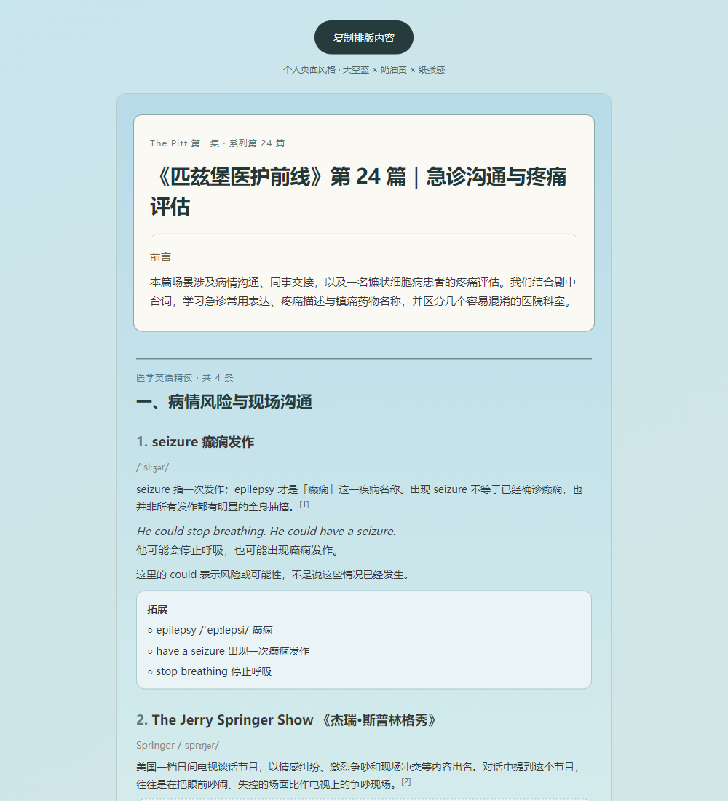

医学英语文章排版
查看原有系列文章的版式与内容结构。预览框可滚动，亦可单独打开完整 HTML。
看剧时，把你觉得值得整理的英文台词、词句或疑问记下来。AI 按条解释语境，补充术语与学习信息；你核对后生成公众号文章 HTML，复制排版内容、补齐图文信息，最后在公众号后台预览并发布。

从你记下的英文表达，到公众号文章发布。
可以是不懂的台词，也可以是觉得有用、想记住的词句或疑问。写原句、大意、集数或时间点都可以。
解释场景中的意思，补充医学术语、缩写、发音、搭配和中文说明；另写教学例句。无法确认的台词或背景明确标「待核实」。
按主题组织词条与说明，生成 Markdown 和带「复制排版内容」按钮的公众号 HTML。
新建图文，粘贴正文，填写标题、封面等信息；检查手机预览后，在公众号后台发布。
两篇实际 HTML · 桌面并排展示 · 手机自动单列
查看原有系列文章的版式与内容结构。预览框可滚动，亦可单独打开完整 HTML。
天空蓝 × 奶油黄 × 纸张感。预览最新发布文章的完整排版，或打开公众号原文。
第 1、9、17、24 篇 · 点击查看公众号原文
《匹兹堡医护前线》第一集开场｜医学英语与口语精读 ↗
第一集 · 第 9 篇《匹兹堡医护前线》第一集｜医学英语：鉴别诊断与收治 ↗
第一集 · 第 17 篇《匹兹堡医护前线》第 17 篇｜医学英语：呕吐与误食 ↗
第二集 · 第 24 篇《匹兹堡医护前线》第 24 篇｜医学英语 ↗
以下是能力范围，可按你的目标选择，不代表固定指令。
提供看剧时记下的原句、词句或问题。AI 逐条解释场景含义，并按需补相关术语、缩写、发音、搭配、中文说明和教学例句。
把讲解内容按主题和阅读顺序组织，写开篇、分节说明与收束；区分剧中原句和教学例句，并列出待核实项。
按仓库共用版式生成 Markdown 和 HTML。打开 HTML，点「复制排版内容」，再粘贴到图文正文。
检查术语、语境、翻译和文章结构，按你的意见调整草稿。
对应上方第 4 步：按这个顺序把文章放进后台并完成发布。
打开 mp.weixin.qq.com ↗，用绑定公众号的管理员或运营者微信扫码登录。进入「草稿箱」，新建图文。
文章页点击「复制排版内容」，回到正文区粘贴。再填写标题、作者、摘要、封面；检查图片、链接和手机预览。
点击「保存为草稿」后，可继续修改，准备好再发布。
确认标题、封面、正文和手机预览无误后，在公众号后台点击「发布」，按页面提示完成操作。若暂时不发布，可以先保存为草稿。